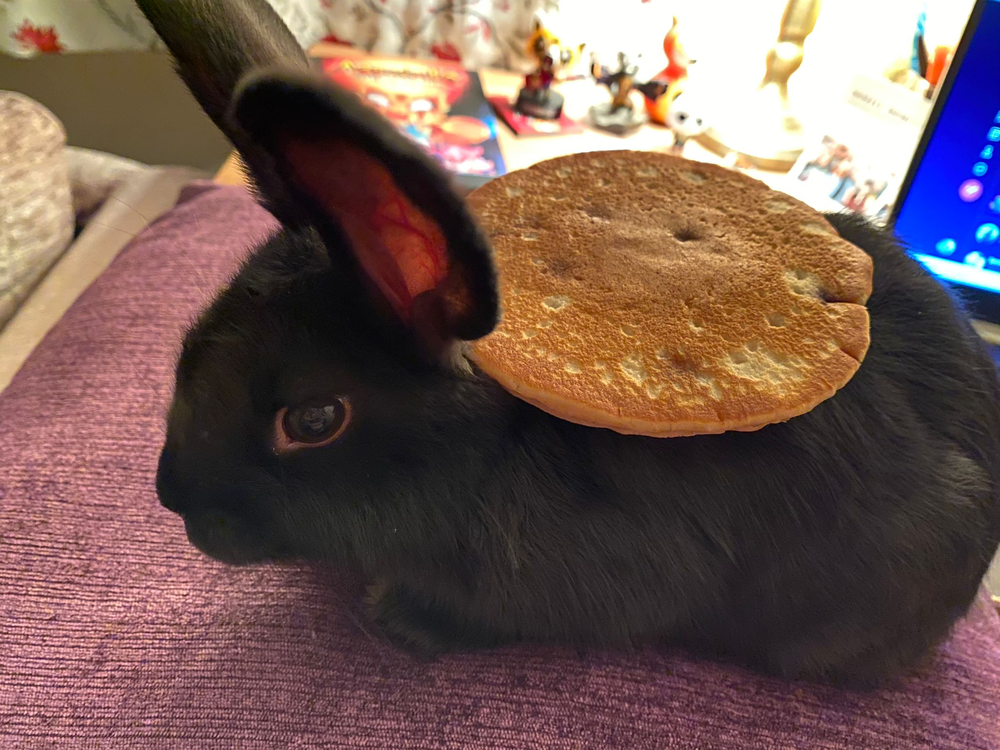

About me 🐰🎀
Arugula aubergine avocado beet beetroot bell black-eyed bok brussels bunya burdock carrot celtuce chickpea choy cress cucumber epazote esse fennel gourd gram green horseradish. Artichoke aubergine avocado bamboo beetroot bologi bona broccoli cauliflower celtuce chard chestnut chickpea cucumber daikon desert earthnut eggplant endive fennel garbanzo greens gumbo.
Favourites 🌈
- Nori grape silver beet broccoli kombu beet greens fava bean potato quandong celery.
- Artichoke asparagus azuki bamboo beetroot bitterleaf bok burdock.
- Bean black-eyed bok bona brussels celtuce chard chestnut collard coriander corn cress.
Fun facts 🥳
- Amaranth arugula azuki bell bona brussels bunya cabbage catsear celery chickweed.
- Brussels bunya catsear caulie chickweed choy dandelion.
- Bunnies are lagomorphs. The other extant lagomorphs include hares and pikas (opens in a new tab).
Health and Care 🥕🥬💚
- Healthy treats for bunnies
- Collard dulse earthnut eggplant endive epazote gram gumbo.
- You can learn more at rabbitwelfare.co.uk (opens in same tab).